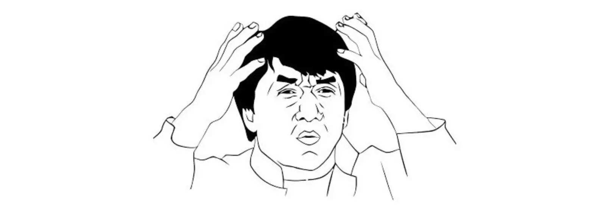

认知篇¶
本篇从认知层面，谈谈在学习英语之前，应该做的一些功课。
为什么我们应该学好英语¶
首先我们应该明白 英语 是一门使用 广泛 的语言，其广泛程度可以从维基百科的用户结构窥探一二：
 英语作为全球使用范围最广的语言，涵盖了人生活的方方面面。
无论是简单的信息交流还是严谨的书籍文献，英语的使用都占有很大的比例。
学好英语，就如同打开了一扇新的世界的门，可以不再被禁锢于原有的获取信息的渠道，可以看到比中文世界更多更丰富的内容。
英语作为全球使用范围最广的语言，涵盖了人生活的方方面面。
无论是简单的信息交流还是严谨的书籍文献，英语的使用都占有很大的比例。
学好英语，就如同打开了一扇新的世界的门，可以不再被禁锢于原有的获取信息的渠道，可以看到比中文世界更多更丰富的内容。
作为互联网从业人员，对英语的要求更高，因为新的技术往往第一时间以英语的形式存在，而且不恰当的翻译，会对我们对互联网的理解产生不好的影响。 同时得益于我们所处的领域，通常可以更快地掌握优秀的工具，我们可以让英语学习变得更加高效。
学习金字塔理论¶
美国学者艾德格·戴尔（Edgar Dale）在 1969 年曾经提出过一个“学习金字塔”理论 (The Cone of Learning)，该理论认为，在初次学习两个星期后，通过阅读学习能够记住内容的 10%；通过听讲学习能够记住内容的 20%；通过图片学习能够记住内容的 30%；通过影像、展览、示范、现场观摩来学习能够记住 50%；参与讨论、提问、发言等方式能够记住 70%；做报告、教学、模拟体验、实际操作能够记住 90%。

这一理论在语言学习领域有非常广泛的应用。 对于语言学习来说，仅仅依靠读和听这两种被动的方式来学习，效果并不理想，因为学习者对知识点的理解只停留在浅层上。 效率更高的方式应该是让学习者主动参与，通过查词典，做笔记，练习等方式来加深对知识点的理解。
该如何学习英语¶
我们都曾经历过应试教育的阶段，魔鬼训练，寒窗苦读，起早贪黑，小有成就，志得意满，甚至有不少人认为学习本该如此，是一件痛苦的事情。 高中时期，我在一个学历压力较大的环境中。我的舍友，中考分别是全县第一（特招生，学校除了给他免掉所有费用还额外每学期发 5000 奖学金）、全县第二和全县第八。 全县第一和全县第二这两个家伙都属于"天才型"，带着个小眼镜，总是一脸好奇的表情，看起来大概小学五年级的样子。 为了让自己具有高昂的斗志，我找班主任将我们的座位进行了一番调整，全县第一跟我同桌，第二在我前面一排。
- 每天早上，我 5 点 20 起床，到操场，开始我的背诵之旅。
- 午自习，我待在教室，把时间用来"学习"，快上课时眯一会。
- 吃晚饭时我总是最早离开食堂，用百米冲刺的速度回到教室。
- 晚自习结束后回到宿舍，匆忙的洗漱后，便上床开始看书，过一会，宿舍灯关了，便悄悄打开小台灯。 我争分夺秒，在考试中却屡战屡败，我调整心态，愈挫愈勇，可是成绩排名却直线下降，有一次的年级排名掉到了 500+，我几乎陷入了绝望。 我不知道为什么我如此努力的学习，成绩反而会下降。反观我的同桌，他把刚拿到的奖学金买了一台笔记本，上课的时候偷偷看美剧，成绩总是稳定的排在第一。
WHY ？
WHY ?
WHY ?

我们来看看我到底犯了哪些错误：
学习的根本动机¶
- 我为什么要努力学习？
- 为了考出好的成绩？
- 有了好的排名之后让自己更加焦虑如何保持排名？
- 本质上我们学习不应该是为了让自己的生活更加美好吗？
- 可我通过如此痛苦的方式去学习，岂不是本末倒置？
如果我轻轻松松的学习，生活的幸福指数会提高很多。为了让自己的生活更加美好，就不要那么为难自己了。 只有先了解自己，认知自己，接纳自己，爱惜自己，才能更好地投入到喜欢的事情中去啊，才能尽情的与这个事情玩耍，挥洒自己的汗水，品尝收获的美味。
这是一个 学渣 跟我说的道理，她是个与众不同的女生，她总是喜欢戴着耳机听音乐，一脸温暖的笑，而那是学校不允许的。
她的一番话，让我释怀，让我不用打着鸡血奋斗，接受自己的平凡，感受生活的美好。
明确场景¶
细分自己学习英语的场景和需求，如：
-
应试：高考、四六级考试、考研、专八
-
留学：托福、雅思、GRE、日常交流
-
非应试：职场、旅游
早起毁一天¶
为了争取早起挤出来的那半个小时，导致上午的课堂时间老是打盹，课堂的学习效率大大降低； 身体是需要合理的休息的，夜间十二点半到一点多才睡，早上五点半就爬起来了，缺少的那部分睡眠时间要从哪里来？ 能被你挤出来的时间都被你挤了，只好用课堂时间来补了，由于课堂上要强打起精神，既无法保持充沛的精力去学习老师讲授的内容，也无法美美的睡一觉。 学习效果显然会大打折扣。不要透支该用来睡眠的时间。 不然的话，不仅无法成为"伟人"，反而会成为"萎人"。
那时的我们有一个共同的爱好，喜欢讨论优秀的作文；我们凑钱买了一个可以看
.txt的mp3，对，是**mp3**，然后每晚轮流由一个人读一篇优秀作文。
我们总是意犹未尽，在讨论中进入睡眠。
不自量力¶
我们应该明白除了学习习惯上的差距，还有学习能力、智力方面的差距； 盲目地将一个不是同段位的人作为目标，给自己分配过重的学习任务，还有沉沉的心理负担，每天都很累。 过高的目标，带来的是对自己自信心的打击，是对自己的怀疑。
Don't push yourself too hard!
人生有三次成长：一是发现自己不再是世界的中心的时候，二是发现再怎么努力也无能为力的时候，三是接受自己的平凡并去享受平凡的时候。—— 周国平
并不享受所做的事情¶
我是为了读书而读书，为了排名而学习；一旦获得了排名的提升，就有短暂的喜悦，一旦排名下降，就会陷入巨大的恐惧、自责与焦虑中。 为了排名而学习这种方式毫无乐趣可言。学习的效果最佳时期往往不在安排好的时间，而是兴趣所致，小有满足。 拿起一本好书，初读几章，被优美的词句吸引，爱不释手，一鼓作气，不知不觉读完，赞不绝口，如此精妙的结构，优美的叙事，奇妙的想象，令人流连忘返。 看到别人弹奏尤克里觉得很酷，搜索教程，勤加练习，假以时日，居然也可以哼哼啊啊奏上一曲。 Enjoy what you are doing！
没有合理的学习计划¶
学习一定是讲究策略的，学习时间的分配更不该是均匀的，我没有仔细分析自己在学习上的薄弱环节，从而针对性的去锻炼； 对于自己无法理解起来很费劲的东西，应该去和别人讨论，交流学习心得；
所以，应该把学习当成一件让自己生活变得更加美好的事情，仔细想想，为什么它会 make your life better？
英语作为一门语言，我们就通过学习语言的方式去学习，去使用，这绝对可以变成一件让自己享受其中的事情。
在我调整了学习方法之后，不再给自己施加巨大的压力，在学习上投入的时间减少了（实际上是有效时间增加了），成绩反而上升了
认识自己的情绪¶
在学习某项技能的时候，你是不是有这种感觉： 有时效率奇高，有如神助;有时却"完全不在状态"、"一心想玩游戏且停不下来" 那么，当我们觉得自己没心思做一件事情的时候，到底是什么在支配我们的意识？
在人的深层意识里，情绪可能更懂你想要什么。 这和我们提到的"情绪化"也有联系，有的时候，因为一个不必要的小事闹情绪，就是不愿意去做那件事。
美国神经科学家，约瑟夫.莱杜（Joseph E. LeDoux）认为焦虑、恐惧、急躁等情绪，在大脑中都有两条情绪通路。
约瑟夫.莱杜认为两条通路能并行运行.
互补有无时，一个人就能正确对外界刺激做出及时准确的反应，从而成为特定文化背景里的佼佼者。
而当某条通路出现问题，或者两条通路冲突严重时，人会出现严重的心理问题。
学会认识自己的情绪，跟情绪谈谈，让自己乖乖地去完成想要实现的目标。
《头脑特工队》这部电影或许可以给你带来一些启发。
该做与不该做¶
- 本指南不推崇 苦行僧 式的学习
- 本指南倾向于遵循科学的学习方法，合理且稳定地分配时间 ，通过良好的学习习惯，达到事半功倍的效果
- 本指南面向的学习者是国内程序员和设计师，所以我们假设你已经拥有了一定的英语基础，且不坚定地持 英语无用论 态度
- 本指南需要 认真 的学习态度
- 学习英语并非一朝一夕之事,需要 持之以恒
永远不要通过 熬夜、在公交车上看书、骑自行车时听英语 等对健康甚至生命有着较大威胁的方式去学习， 那些所有你沾沾自喜以为你原力爆发**通宵达旦**、**日夜兼程**所获得的东西都会在日后让你加倍偿还。
太用力的人跑不远。
相信科学，采用合理的学习方案，量力而行，Enjoy！
给自己创造良好的英语环境¶
Consume media only in english like watching Youtube instead of Bilibili.
Just make english a part of your daily life!
Make it a habit like brushing your teeth.
婴儿是如何学习语言的¶
如果你仔细观察，你会发现婴儿表达自己的时候，经常会出现如下的语句：
-
“手机妈妈开” - 妈妈帮我把手机打开
-
“香，菜菜，妈妈” - 妈妈做的菜吃起来很香
-
“球，弟弟，跑” - 弟弟的球滚走了
我们大多数的时候是可以推断出孩子想要表达的意思，这种表达方式不但不令人讨厌反而会让我们觉得很可爱。
那么从这个事情里，我们可以发现两个有趣的现象：
-
婴儿表达一个事情的时候，会把各种词汇混在一起，很可能是错乱的
-
父母在听取这类信息时是不会取笑孩子的，给孩子创造了非常安全的语言环境
所以，在一个安全的环境里，你会**自信的**表达自己。可以先把简单的词汇混在一起，不用过多考虑是否有语病，假以时日，你便可以将这些词汇组织在一起，从而表达出正确的意思。
那我们就从单词开始吧。
推荐观看：
如何在六个月内掌握一门外语 | 克利斯•伦戴尔 | TEDxLingnanUniversity
The first 20 hours -- how to learn anything | Josh Kaufman | TEDxCSU
下一篇：单词篇